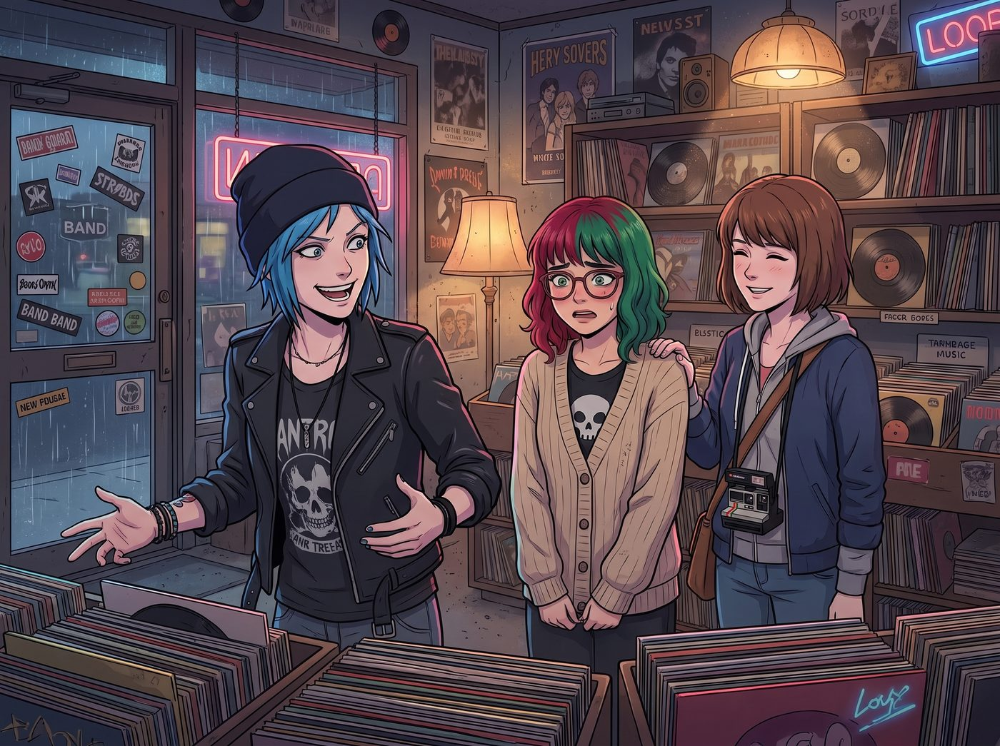
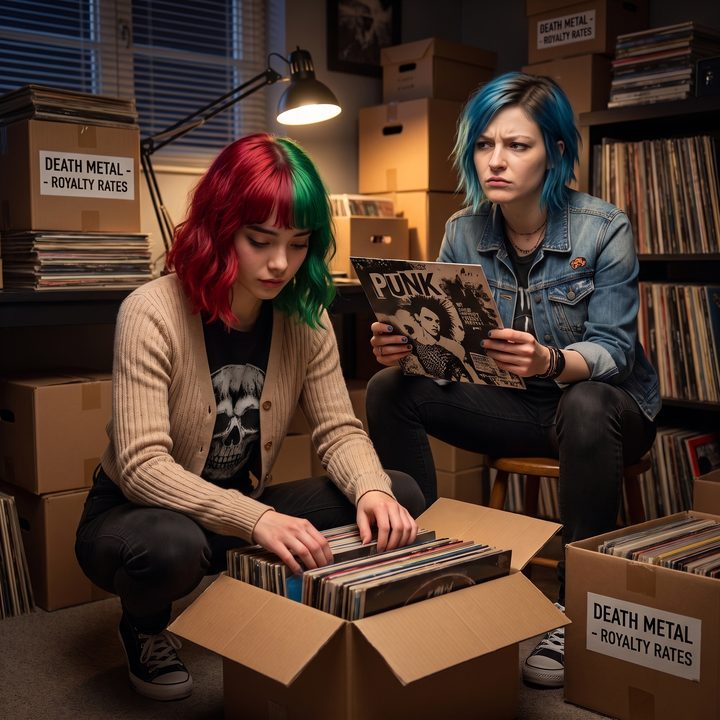

龐克審計員（倒敘）


巨無霸辣香腸披薩的油脂，在Lily嚴格控制的四十五分鐘配額內被消滅殆盡。隨後，這輛發出刺耳轟鳴的皮卡車，停在了波特蘭市區邊緣一家獨立黑膠唱片店門口。
這裡，是波特蘭文藝青年和街頭龐克們的聖地。
一、鯊魚聞到血腥味
一推開那扇貼滿了樂團貼紙的玻璃門，一股混合著舊紙張、灰塵、和劣質線香的氣味撲面而來。店裡正用巨大的音箱播放著不知名的迷幻搖滾，分貝絕對超過了八十五。
「聽著，實習生，」Chloe轉過頭，對著身後緊緊抓著針織衫下擺的Lily大聲喊道，「今天本大爺要給妳的大腦做個物理升級！妳平時聽的那些古典樂和白噪音，只會讓妳變成一個沒有感情的機器。妳需要的是憤怒！是失真吉他！是龐克！」
Max也笑著拍了拍Lily的肩膀：「去隨便逛逛吧，Lily。這裡沒有學生手冊，妳可以挑任何看起來順眼的封面。」
說完這兩句充滿前輩關懷的開場白後，Chloe和Max的眼神瞬間變了。
就像兩隻聞到了血腥味的鯊魚，Chloe直接一頭扎進了標著硬核龐克與九零年代油漬搖滾的特價紙箱區，雙手像打字機一樣飛速翻動著唱片；而Max則戴上了店裡那個海綿已經破洞的巨大試聽耳機，沉浸在了某個獨立民謠樂團的憂鬱女聲中。
兩分鐘內，說好要帶學妹開眼界的兩個人，就這樣把Lily徹底遺忘在了這片混亂的黑膠海洋裡。
二、雜項紙箱的重組
Lily孤零零地站在原地。她看著周圍那些染著綠色頭髮、穿著破洞網襪的顧客，聽著震耳欲聾的音樂，大腦裡的秩序防禦機制開始瘋狂報警。
她深吸了一口氣，決定用自己的方式來理解這個混亂的空間。她走向了旁邊一個標著雜項分類不明的巨大木箱。
四十分鐘後。
Chloe手裡抱著三張絕版的經典龐克唱片，心滿意足地從唱片堆裡抬起頭。「Max！」Chloe喊了一聲，「妳挑好沒？這幾張簡直是極品！」
Max摘下耳機，揉了揉眼睛：「我找到了一張超棒的後搖……等等，Lily呢？」
兩個人同時愣住了。她們這才想起來，今晚的主角是被她們強行拖出來社會化的大一學妹。
「完了，」Chloe臉色一變，「那傢伙該不會被店裡的重金屬音樂嚇得報警了吧？或者躲在哪個角落裡填寫心理創傷索賠表？」
她們慌忙在迷宮般的貨架間尋找。最終，在店鋪最深處的二手單曲區域，她們找到了Lily。
三、稅務註冊地與版權風險
Lily沒有哭，也沒有報警。她正蹲在地上，面前攤開著上百張亂七八糟的黑膠唱片。她的雙手沾滿了灰塵，但她的眼神卻閃爍著一種前所未有的、令人毛骨悚然的狂熱光芒。
「妳……妳在幹嘛？」Chloe震驚地看著地上那些被分成十幾個小堆的唱片。
「Chloe學姐！Max學姐！」Lily抬起頭，推了推沾著灰塵的圓框眼鏡，語氣中充滿了一種發現了重大系統漏洞的興奮感，「這家店的庫存管理系統，簡直是一場災難！他們竟然只按照音樂流派這種極度主觀且缺乏標準化定義的標籤來分類實體資產！」
Lily站起身，指著地上那些被她重新整理過的唱片堆：「我剛才花了三十五分鐘，對這個雜項紙箱進行了重組。我沒有按照歌手字母順序，那太低效了。我按照發行公司的稅務註冊地以及國際標準錄音錄影資料代碼的發行年份排序對它們進行了交叉索引！妳們看，這一堆全是八零年代中後期、在開曼群島註冊的獨立廠牌發行的；而那一堆，則是存在嚴重版權歸屬爭議、可能面臨聯邦侵權訴訟的高風險庫存！」
Max聽得下巴都快掉下來了。她看著那些原本代表著叛逆、無序和地下文化的搖滾唱片，硬生生被這個十八歲的少女，按照稅務註冊地和法律風險分類成了冰冷的財務報表。
四、無政府狀態的可行性評估
Chloe的眼角劇烈地抽搐了兩下。她決定挽救一下這場失敗的龐克啟蒙教育。
她從自己懷裡抽出一張經典龐克專輯，直接懟到Lily面前。
「聽著，實習生。不要去管什麼見鬼的分類代碼！這是一張唱片！看看這封面，看看這歌詞！」Chloe狂躁地翻開內頁的歌詞本，「這是在對抗體制！是在砸爛那些西裝暴徒的規則！妳難道感受不到這裡面的憤怒嗎？！」
Lily眨了眨眼，乖巧地接過那張充滿了反叛精神的唱片。她沒有去看那極具視覺衝擊力的龐克拼貼封面，而是像審查一份合同一樣，認真地閱讀起了歌詞內頁。
一分鐘後，Lily抬起頭，眉頭微微皺起。
「Chloe學姐，我能理解他們對於底層階級流動性停滯的憤怒。」Lily扶著眼鏡，用一種極度嚴謹的學術口吻開始了她的點評，「但是，這種提出的無政府狀態，在行政邏輯上缺乏基本的可行性評估。」
「……啥？」Chloe愣住了。
「他們主張砸爛國家機器，這很好。但這裡面，完全沒有提到在摧毀現有體制後，該如何接管當地的電力網絡、水務系統以及基礎的糧食物流供應鏈。」Lily認真地指著歌詞，彷彿在挑剔一份不及格的期中報告：「沒有替代方案的破壞，不是革命，那只是一場缺乏預算的違章建築拆除工程。如果社會真的進入了無政府狀態，最先餓死的恰恰是這些沒有資產儲備的龐克青年，而那些坐在華爾街的資本家，早就帶著瑞士銀行的密碼坐私人飛機去海外避難了。」
Lily將唱片還給處於石化狀態的Chloe，給出了她的終極結論：「所以，這種反抗，本質上是一種極度低效且具有自我毀滅傾向的無效抗議。真正能擊敗體制的，不是砸爛吉他，而是查出體制的稅務漏洞，然後合法地把它們的資金鏈抽乾。」
五、被審計的龐克聖經
唱片店裡那首震耳欲聾的迷幻搖滾還在響著。但Chloe覺得自己的世界已經安靜了。
她看著手裡那張被譽為龐克聖經的唱片，突然覺得它不香了。它那引以為傲的反叛精神，在這個大一新生的合規性降維打擊面前，簡直就像是小孩子在沙坑裡撒嬌一樣幼稚。
「Max……」Chloe轉過頭，聲音沙啞，彷彿靈魂被抽乾了一半，「答應我，以後絕對不要讓這個傢伙靠近任何政府機構或者華爾街的投資銀行。如果讓她掌握了權力，她會用Excel表格把我們所有人都變成她的免稅資產。」
Max已經笑得快要背過氣去了。她舉起寶麗來相機，對著那個依然蹲在地上、準備繼續按照版權稅率整理下一箱死亡金屬唱片的Lily，以及拿著龐克唱片懷疑人生的Chloe，按下了快門。
「喀嚓。」
照片吐了出來。在2017年的這個波特蘭雨夜，Max在照片背面寫下了一行字：
『我們帶她來聽龐克，試圖讓她學會打破規則。但我們錯了。她沒有打破規則，她只是用更高級的規則，把龐克給審計了。』